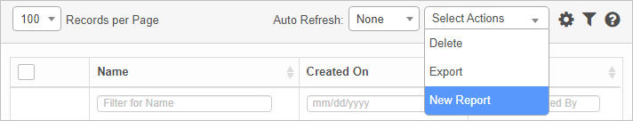
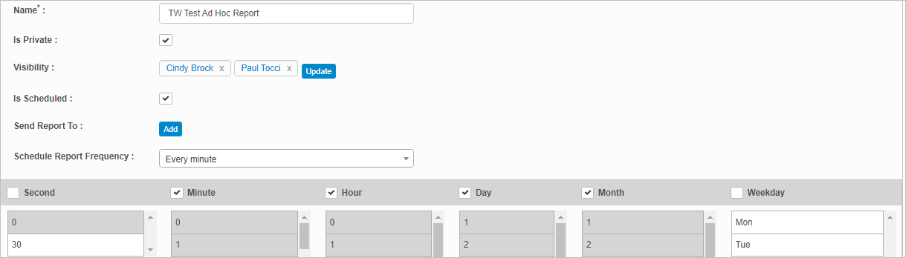
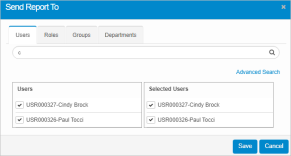
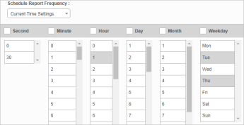

New Ad Hoc Reports
Use this function to create view and modify Ad Hoc reports and save Canned Reports.
There are three steps in the process:
| To edit a report, following the same steps as outlined above. |
Identifying Information
| 1. | In the navigation pane, select Reports > Ad Hoc Reports. The Reports window displays. |
| 2. | From the Select Actions drop-down list, select New Report. |


| 3. | Complete the fields in the upper portion of the window, referring to the information below. |
| Field | Description | |||||||||
|---|---|---|---|---|---|---|---|---|---|---|
| Name | Name to identify the report. | |||||||||
|
Is Private |
Marks the report as private so only visible to those designated in the Visible field. |
|||||||||
|
Visibility |
The names of the users, group, roles or departments who can see the report. This field Is only displayed when the Is Private option is selected. To select those who can see the report, do the following:.

|
|||||||||
|
Is Scheduled |
The frequency at which the report is generated. |
|||||||||
|
Send Report To |
The names of the users, group, roles or departments to whom the report is sent. This field is only displayed when the Is Scheduled option is selected. To select those who will receive the report, follow the instructions above for Visibility. |
|||||||||
|
Schedule Report Frequency |
Option 2 To configure a specific frequency:
 |
| 3. | To remove the data currently entered, move to the Select Actions drop-down list and choose Clear Query. |
| 4. | To remove the data currently entered, click Clear All Query |
| 5. | When all selections/entries are made, click Save and Continue. |
| 6. | To continue the process, follow the instructions for Report Properties and Conditions. |
Related Topics